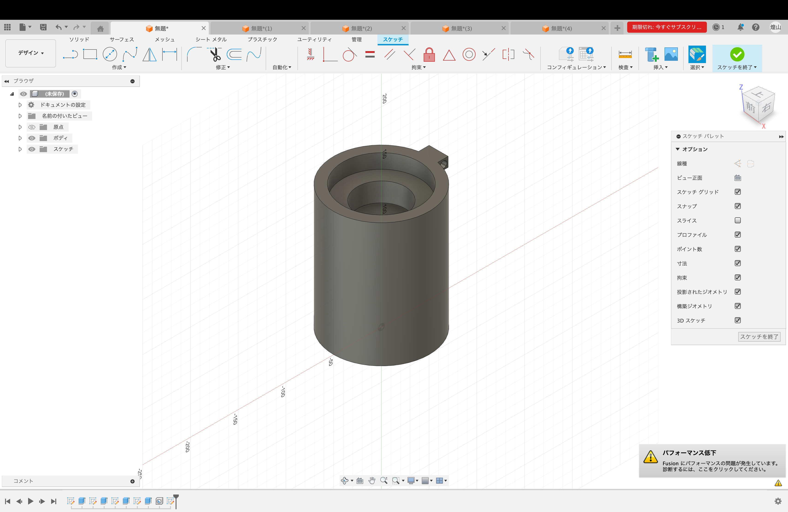
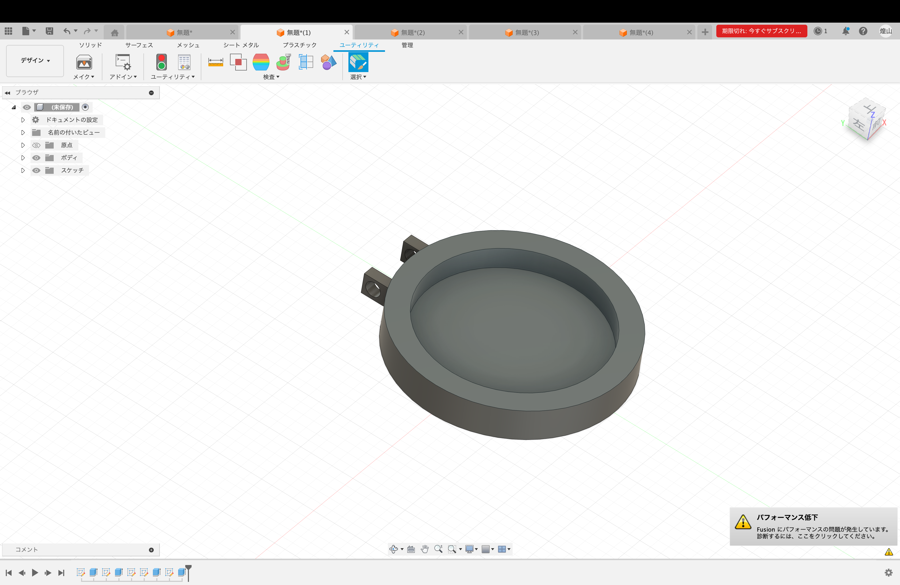
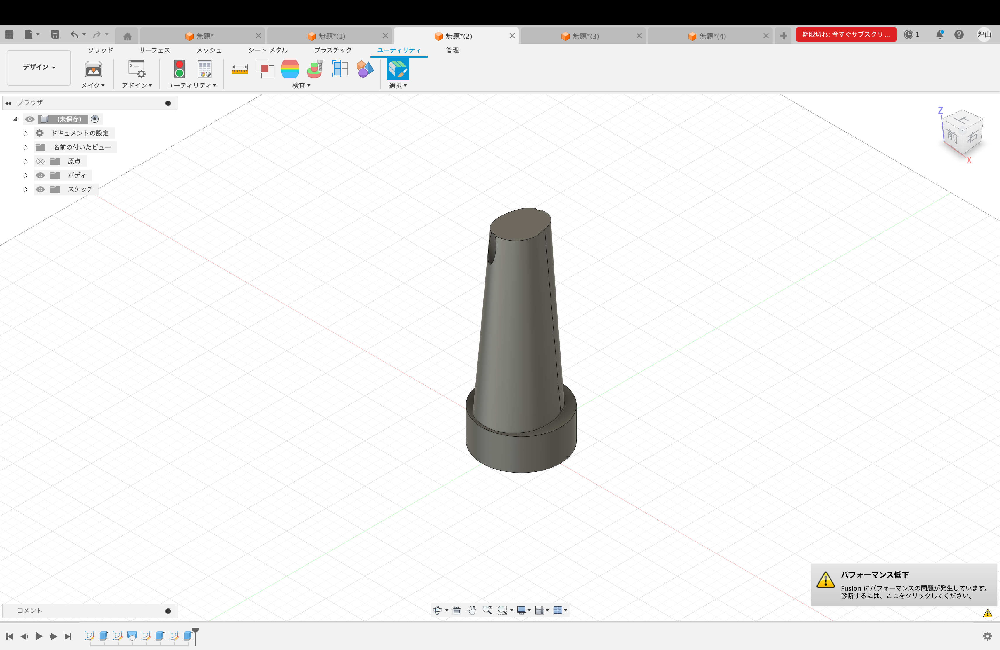
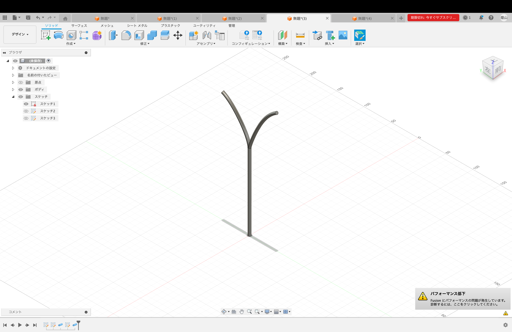
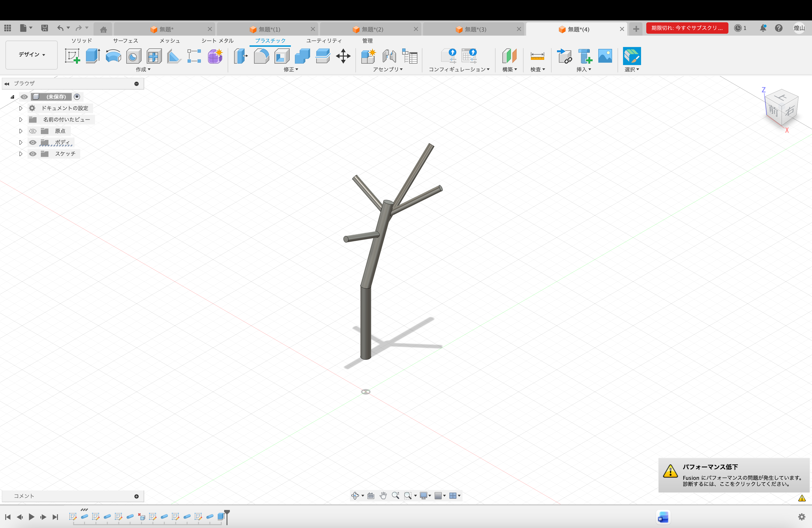

かんざし
これまで、Blenderを用いてやっと木のモデリングが完成し、現像する一歩手前まできたのだが、サポート材の関係で刷り出すのが不可能に近いことが判明した。ここまできてまたデザインを練り
直すのは精神的にも重くはあったが作り直すことにした。
新デザイン
今回はデザインの細かさや複雑さが実現性を欠くデザインであったため、もっとシンプルに、それでいて作品性のあるデザインを考えることにした。そのためにまずサンプルとなる木を
探すことにした。街路樹のような大きな木は、枝や葉数が多く、細かい造形が多くなるため、
今回は選択肢から外した。そうして、比較的サイズの小さく葉数や枝数も少ない観葉植物の
中から選ぶことにした。また観葉植物は室内飼育がメジャーで、かんざしなどはデスク周り
に置かれることを想定しているため、観葉植物をサンプリングした方が設置後のことも考え
ると親和性があると考えた。それからフィールドワークを始め、カフェやグリーンショップ
を見て回った。その結果、葉数や枝分かれが少なく、造形の比較的シンプルなパキラをサン
プリングすることにした。
スタンド
かんざしのデザインを変えるにあたり、スタンドのデザインも変えることにした。この時、ゴミ箱型のスタンドという当初のスタンスは変えずに、デザインを変えることにした。
旧型のスタンドは、ゴミ箱の開口部が小さくパキラのような幹の太い植物とは合わないため、
開口部の大きなスタンドに変更した。


パキラ
かんざしのデザインは、パキラの幹から分岐する2本の枝のうち片方をかんざしとして、幹から抜いて使うことが出来るような作りにすることにした。かんざし側の枝は枝分かれを少
なめにして、もう一方は枝を多めに生やした。こちら側はサポート材が少し増えるため、実験的に
枝を曲線ではなく直線で出してみることにした。この結果に応じて直線ていくか曲線で行く
か決めることにする。
(ちなみに3DソフトはFusion360に戻しました。)



次回は細かいデザインの調整と、うまくいき次第本番のペレットで刷り出していこうと思う。